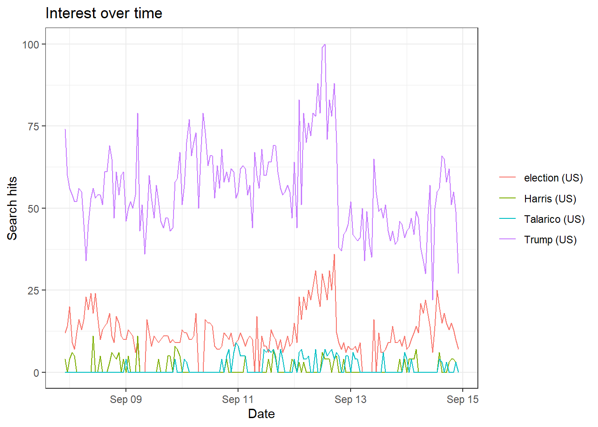
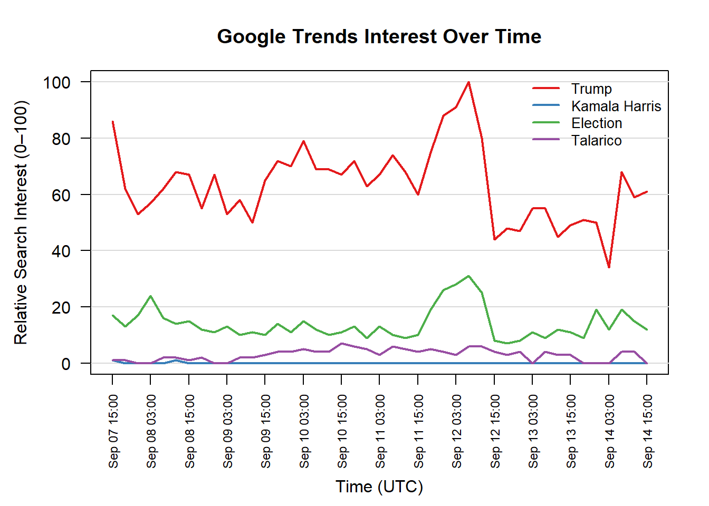

For the trends, particularly the election related keywords it is understandable those most related to the current political news would be appear more in the news. As such it is understanable that Trump would be the highest as he appears more in the news, than election as the midterms are approaching. This also has some correlation with Talarico as he is running in the midterms and made the news recently, the related seach terms like “talarico kimmel” show this. Lastly would be Harris as she has not been in the news for anything important in quite some time. Given this data was gather for the last week, it is split by the hour which aside from a jump on Sept. 12th means the data is just reflecting the daily cycle of the US.This was run again, but using keywords related to the company Flock Safety and for the last month. Overall, these approaches will get the same data but in terms of the main data questions they are not equal. The questions: Reproducibility — could someone else regenerate your file exactly? Provenance — which method records the query parameters for you? Scale — what happens when you need fifty terms instead of three? Fragility — what breaks, and how would you know? The difference can be found even to the first question, as the data pulled down from the website if the parameters are not match perfectly and time stamps are done correctly the data cannot be reproduced. Additionally, it is usually a poor idea to let humans do the data entry for applications like this. To continue in this vein, the provenance is this exact issue. To do the reproduction on from the website one must enter again the parameters from the notes but if done by code it will be recorded in the function call. Example: Keywords: “Trump”,“Harris”,“election”, “Talarico” 9/14 4:20pm US All Cat. Last Week News This will continue in a different way for the scalability, while the code can be set up to take however many strings as you would like the website will take a significantly larger number of button presses for the same result with the addition of greater error risk. To a level further most websites are constructed to not take kindly to bots looking for data particularly when that information could be found with more efficiency from an API call. Lastly, fragility. Websites will always be more fragile than code, that additional level of abstraction for the user experience can introduce more chances for errors and if a website crashes that cause issues with data checks and timing. Code will always have its own unique issues, but generally developers are incentivized to write informative error messages. These differences aside, this does also come down to the nature of the project as for some it would be perfectly reasonable to use a website UI and taking the proper notes rather than going through the trouble of setting up a script which may only get run once.
Google Trends Code and Visuals Keywords: “Trump”,“Harris”,“election”, “Talarico” 9/14 4:20pm US All Cat. Last Week News
library(gtrendsR)
Warning: package 'gtrendsR' was built under R version 4.5.3
now <-Sys.time()print(paste0("Time at run is: ", now))
[1] "Time at run is: 2026-09-14 17:38:38.405979"
THET =gtrends(c("Trump","Harris","election", "Talarico"), onlyInterest =TRUE, geo ="US", gprop ="news", time ="now 7-d", category =0, ) # last five yearsthe_df=THET$interest_over_timeplot(THET)
Warning: `aes_string()` was deprecated in ggplot2 3.0.0.
ℹ Please use tidy evaluation idioms with `aes()`.
ℹ See also `vignette("ggplot2-in-packages")` for more information.
ℹ The deprecated feature was likely used in the gtrendsR package.
Please report the issue at <https://github.com/PMassicotte/gtrendsR/issues>.

elec_file <-read.csv("gtrend_election.csv")# 1. Read CSV and clean column whitespacedf <-read.csv("gtrend_election.csv", check.names =FALSE, stringsAsFactors =FALSE)names(df) <-trimws(names(df))# 2. Parse timestamps as UTC POSIXctdf$Time <-as.POSIXct(df$Time, format ="%Y-%m-%dT%H:%M:%SZ", tz ="UTC")# 3. Setup plotting parametersterms <-names(df)[-1]line_colors <-c("#E41A1C", "#377EB8", "#4DAF4A", "#984EA3")# Expand bottom margin to fit rotated date-hour labelspar(mar =c(6.5, 4.5, 3.5, 2))# 4. Initialize empty plot frame (suppressing default x-axis with xaxt = "n")plot( df$Time, df[[terms[1]]],type ="n",ylim =c(0, 100),xaxt ="n",xlab ="",ylab ="Relative Search Interest (0–100)",main ="Google Trends Interest Over Time",las =1)title(xlab ="Time (UTC)", line =5)# 5. Add horizontal gridlinesgrid(nx =NA, ny =NULL, col ="gray85", lty =1)# 6. Format x-axis by hour (every 12 hours keeps labels readable; adjust 'by' as needed)hourly_ticks <-seq(from =min(df$Time), to =max(df$Time), by ="12 hours")axis.POSIXct(side =1,at = hourly_ticks,format ="%b %d %H:%M",las =2,cex.axis =0.75)# 7. Draw individual trend linesfor (i inseq_along(terms)) {lines(df$Time, df[[terms[i]]], col = line_colors[i], lwd =2)}# 8. Add legendlegend("topright",legend = terms,col = line_colors,lwd =2,bty ="n",cex =0.85)

Keywords: “Flock Camera”,“Flock”, “automatic license plate reader” 9/14 4:30pm US All Cat. Last month Websearch
## EPPS 6302 Methods of Data Collection and Production## Google Trends with Rlibrary(gtrendsR)now <-Sys.time()print(paste0("Time at run is: ", now))